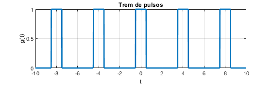
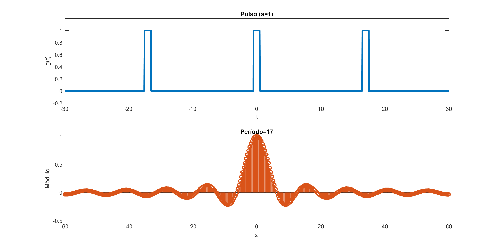
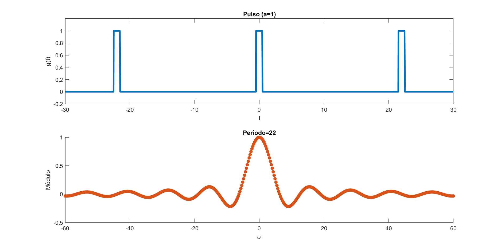
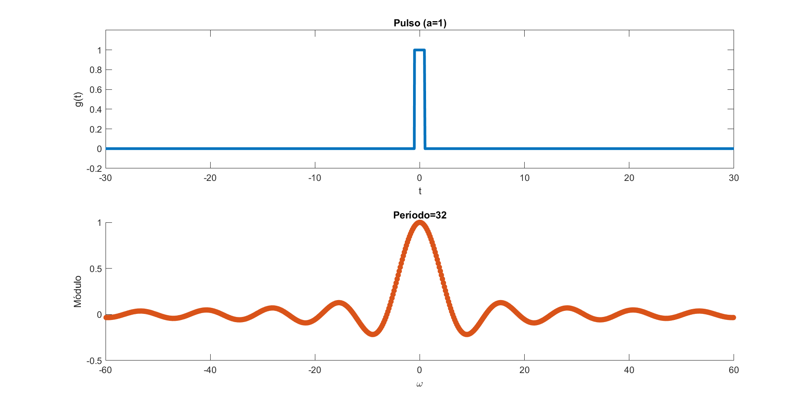

Aula 11:
Transformada de Fourier de Sinais Periódicos
SEL0604
Prof. Melkzedekue Moreira - Melk
Objetivos
- Interpretação algébrica vs física;
- Sinais Periódicos;
- Janelamento;
- Solução de EDO;
- Exemplos.
Interpretação Algébrica da Transformada de Fourier
$$ g(t)=\frac{1}{2\pi}\int_{-\infty}^\infty G(\omega)e^{j\omega t}d\omega $$
Se um sinal $g(t)$ admite uma transformada de Fourier, então, algebricamente, isso significa que o sinal pode ser reescrito como a combinação linear de exponenciais complexas cujas coordenadas são dadas por $\frac{1}{2\pi}G(\omega)$.
Interpretação Algébrica da Transformada de Fourier
Euclidiano ($\mathbb{R}^n$):
$$ \vec v=\alpha_1\hat{a}_1+\alpha_2 \hat{a}_2+\cdots+\alpha_n\hat{a}_n $$
Interpretação Algébrica da Transformada de Fourier
Espaço de Funções $\mathcal{L}^2(\mathbb{R})$:
$$ g(t)=\int_{-\infty}^\infty \beta(\omega)e^{j\omega t}d\omega$$
Interpretação Física da Transformada de Fourier
$$ g(t)=\frac{1}{2\pi}\int_{-\infty}^\infty |G(\omega)|e^{j(\omega t+\theta(\omega))}d\omega $$
Se um sinal $g(t)$ admite uma transformada de Fourier, então, fisicamente, isso significa que o sinal pode ser escrito como uma soma de senos e cossenos de diferentes amplitudes, frequências e fases, dado que $e^{j(\omega t +\theta(\omega))}=\cos(\omega t+\theta(\omega))+j\sin(\omega t + \theta(\omega))$.
Interpretação Física da Transformada de Fourier
Sinal Periódico
$$ g(t)=g(t+T)$$
em que $T>0$ é o período de repetição do sinal.
Representação via Série de Fourier:
$$
g(t)=\sum_{n=-\infty}^\infty c_n e^{jn\omega_0 t}
$$
Transformada de Fourier
$$ \mathcal{F}\{g(t)=g(t+T)\}=\mathcal{F}\Bigl\{\sum_{n=-\infty}^\infty c_n e^{jn\omega_0 t}\Bigr\}$$
em que $T>0$ é o período de repetição do sinal.
Transformada de Fourier
$$\mathcal{F}\Bigl\{\sum_{n=-\infty}^\infty c_n e^{jn\omega_0 t}\Bigr\}=\sum_{n=-\infty}^\infty c_n \mathcal{F}\{e^{j n\omega_0 t}\}$$
$$\mathcal{F}\{g(t)=g(t+T)\}=\sum_{n=-\infty}^\infty 2\pi c_n \delta(\omega-n\omega_0) $$
Transformada Inversa de Fourier
$$g(t)=g(t+T)=\mathcal{F}^{-1}\Bigl\{\sum_{n=-\infty}^\infty 2\pi c_n \delta(\omega-n\omega_0)\Bigr\}\\
=\frac{1}{2\pi}\sum_{n=-\infty}^\infty 2\pi c_n \int_{-\infty}^\infty \delta(\omega-n\omega_0)e^{j\omega t}d\omega\\
= \sum_{n=-\infty}^\infty c_n e^{jn\omega_0 t}
$$
Transformada de Fourier
Função seno e cosseno
$$\mathcal{F}\{\sin(\omega_0 t)\}=j\pi(\delta(\omega+\omega_0)-\delta(\omega-\omega_0))$$
$$\mathcal{F}\{\cos(\omega_0 t)\}=\pi(\delta(\omega+\omega_0)+\delta(\omega-\omega_0))$$
Exemplo: trem de pulsos
Considere a função periódica cujo primeiro período é dado por
$$
g(t)=\begin{cases}
1,\text{ se } |t|\le \frac{a}{2}\\
0,\text{ se } \frac{a}{2}\le |t| \le \frac{T}{2}
\end{cases}
$$
A relação $w=\frac{a}{T}$ é chamado de fator de ocupação. Ex: a=1; T=4;

Exemplo: trem de pulsos
$$c_n=\frac{a}{T}\text{sinc}\left(\frac{n\omega_0a}{2}\right)$$
Exemplo: trem de pulsos
$$G(\omega)=\sum_{n=-\infty}^\infty 2\pi \frac{a}{T}\text{sinc}\left(\frac{n\omega_0a}{2}\right)\delta(\omega-n\omega_0)$$
Espectro de Módulo do trem de pulsos
Espectro de Módulo do trem de pulsos
Espectro de Módulo do trem de pulsos
Espectro de Módulo do trem de pulsos

Espectro de Módulo do trem de pulsos

Espectro de Módulo do trem de pulsos
Espectro de Módulo do trem de pulsos

Transformada de Fourier (Teórico)
 $
G(\omega)=\pi\delta(\omega-\omega_0)+\pi\delta(\omega+\omega_0)
$
$
G(\omega)=\pi\delta(\omega-\omega_0)+\pi\delta(\omega+\omega_0)
$
Transformada de Fourier (Prática)
 $
G(\omega)=\frac{T}{2}\text{sinc}(\frac{(\omega-\omega_0)T}{2})+\frac{T}{2}\text{sinc}(\frac{(\omega+\omega_0)T}{2})
$
$
G(\omega)=\frac{T}{2}\text{sinc}(\frac{(\omega-\omega_0)T}{2})+\frac{T}{2}\text{sinc}(\frac{(\omega+\omega_0)T}{2})
$
Equações Diferencias Ordinárias (EDO)
$$ a_n\frac{d^n y}{dt^n}+a_{n-1}\frac{d^{n-1}y}{dt^{n-1}}+\cdots+a_1\frac{dy}{dt}+a_0y = x(t) $$
Para $t \in [-\infty,+\infty]$
Propriedade da diferenciação:
$$ \mathcal{F}\{\frac{d^n g}{dt^n}\}=(j\omega)^n G(\omega) $$
Exemplo
$$ \frac{d^2y}{dt^2}-y=-x(t) $$
Para $t \in [-\infty,+\infty]$
Exemplo
$$ (\omega^2+1)Y(\omega)=X(\omega) $$
$$ Y(\omega)=\frac{1}{1+\omega^2}X(\omega) $$
$$ e^{-a|t|}\Longleftrightarrow\frac{2a}{\omega^2+a^2} $$
Exemplo
$$
Y(\omega)=\mathcal{F}\{e^{-|t|}\}X(\omega)\\
$$
$$
y(t)=e^{-|t|}\ast x(t)\\
=\int_{-\infty}^\infty e^{-|\tau|}x(t-\tau)d\tau
$$
Diferentes entradas:
$$
x_1(t)=\delta(t)\\
x_2(t)=u(t)
$$
Equações Diferencias Ordinárias (EDO)
$$ a_n\frac{d^n y}{dt^n}+a_{n-1}\frac{d^{n-1}y}{dt^{n-1}}+\cdots+a_1\frac{dy}{dt}+a_0y = x(t) $$
Para $t \in [0,+\infty]$
Propriedade da diferenciação:
$$ \mathcal{F}\{\frac{d^n g}{dt^n}\}=? $$
Propriedade da Diferenciação
Supondo $\lim_{t\to\infty} y(t)=0$, tem-se
$$ \mathcal{F}\{\frac{dy}{dt}\}=j\omega Y(\omega)-y(0) $$
$$ \mathcal{F}\{\frac{d^2y}{dt^2}\}=(j\omega)^2 Y(\omega)-(j\omega) y'(0)-y(0) $$
Propriedade da Diferenciação
Supondo $\lim_{t\to\infty} y(t)=0$, tem-se
$$ \mathcal{F}\{\frac{d^ny}{dt^n}\}=(j\omega)^n Y(\omega)-\sum_{k=0}^{n-1}(j\omega)^{n-1-k} y^{(k)}(0) $$
Exemplo
$$\frac{dy}{dt}+ay=0,\quad y(0)$$
$$
y(t)=?
$$